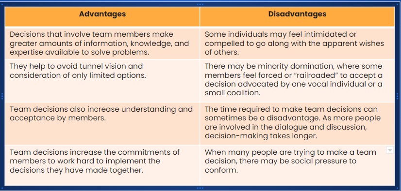

Issues in Managerial Decision Making
Callout
We'll explore the various aspects of managerial decision-making, including creativity, individual vs. group decision-making, and ethical considerations
Let's start by clicking on the "Creativity in Decision Making" tab to delve into this topic.
Creativity in Decision Making
Creativity is a crucial aspect of decision-making. It involves finding novel ideas or unique solutions to problems.
Personal Creativity Drivers

Creativity tends to flourish when individuals or teams have a deep understanding of the task at hand. It's about building on what you know and taking it in new directions. Task motivation also plays a role in fostering creativity.
Situational Creativity Drivers
Managers should, of course, make sure that their organizations and teams are well-staffed with creative members.
But they should also realize these team creativity skills will blossom best when backed by good management support and the right organizational culture.
This means things like having a team leader with the patience to allow for creative processes to work themselves through a decision situation.

What are your thoughts on the role of creativity in decision-making? Have you encountered situations where creativity led to innovative solutions?
Individual vs. Group Decision Making

Now, let's shift our focus to the decision-making process itself. Do you believe decisions should be made individually or with the assistance of a group?
Group Decision Making
Groups and teams often contribute significantly to creativity in decision-making. Think about products like the iPhone or Razr, which were the result of collaborative efforts. However, the choice between individual and group decision-making can greatly impact the outcomes. What factors should managers consider when making this choice?
Ethical Decision Making
Utility: Does the decision satisfy all constituents or stakeholders?
Rights: Does the decision respect the rights and duties of everyone?
Justice: Is the decision consistent with the canons of justice?
Caring: Is the decision consistent with your responsibility to care?
Do you think these criteria cover all aspects of ethical decision-making? Can you share an example where ethical considerations played a significant role in a managerial decision?